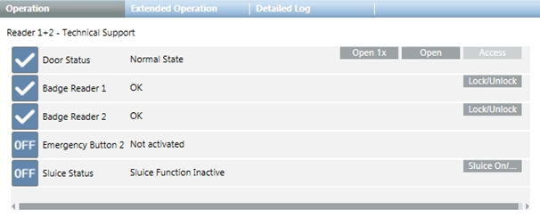

SIPORT Commands Reference List
When a badge reader is selected in System Browser, the following commands are available in the Operation tab:
- Door Status.
- Open 1x: open the door temporarily.
- Open: open the door.
- Access: put an open door back under access control.
- Badge Reader.
- Lock/Unlock: lock/unlock the badge reader.
- Sluice Status.
- Sluice On/Off: activate/deactivate the sluice function. The sluice function lets you control badge readers of different doors. When the sluice function is activated and one of the linked doors is open, the badge readers of the other doors are locked. The door must be closed before the badge readers become available again.
